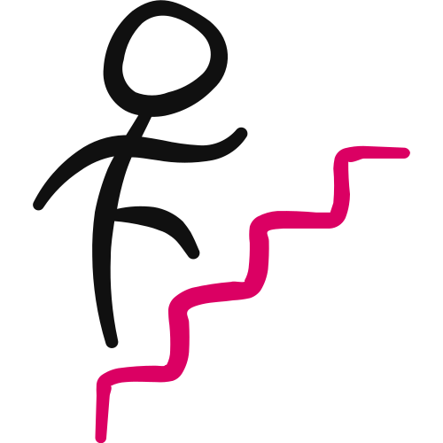

How It Works · 2 of 4 · The $100K Day Accelerator™
The 4 Phases
From your first micro event to an automated $100K month. Each phase proves one thing, adds one close and reaches one rung higher.

You'll leave with the phase you're in, exactly how to run its events, and the one number that tells you when to move up.
- Launch proves your message. A free weekly micro event and the ASK™ Close, for your first 3–5 clients. 02
- Execute proves your offer. A weekly single-day event, your first VIP and the JOIN™ Close, for $25K months. 03
- Growth proves your pitch. A longer fortnightly event, paid entry and the PASS™ Close, for $50K months. 04
- Mastery proves scale. A monthly multi-day event, the full money-in stack and the SEAL™ Close, for $100K months. 05
- Move up on the numbers. Hit your phase's benchmark across one full 28-day cycle. 06
01
The Ladder at a Glance
Read across to compare the phases. Read down a column to see everything about one phase.
| 1 · Launch | 2 · Execute | 3 · Growth | 4 · Mastery | |
|---|---|---|---|---|
| Proves | Message | Offer | Pitch | Scale |
| Event | Micro event | Single day | Single day | Multi-day |
| Length | 60–90 min | 90–120 min | 180–240 min | 60–180 min a day |
| How often | Weekly | Weekly | Fortnightly | Monthly |
| Events per 28 days | 4 | 4 | 2 | 1 |
| Ticket | Free | Free or $27 | $27–$47 · free allowed | $47–$97 · free allowed |
| Close | ASK™ | JOIN™ | PASS™ | SEAL™ |
| Offer | Membership Offer, on the call | Membership Offer, from the room | Accelerator Offer | Exclusivity Offer |
| Goal | First 3–5 paying clients | $25K months | $50K months | $100K months |
| Move up when | 20%+ landing page conversion · 50–100 survey responses | 10%+ of attendees JOIN™ | 15%+ of attendees book a PASS™ | $100K months, 3 cycles in a row → automate |
What you call your event is up to you. A micro event is often run as a workshop, a single day as a masterclass, and a multi-day as a challenge.
02
Phase 1 · Launch
Phase 1 is about getting reps. You run a short free event every week, ask questions, and use the answers to sharpen your message until it lands.
- Event
- A micro event, 60–90 minutes, every week
- Ticket
- Free only
- Upgrades
- None. No VIP, so nothing feels complicated
- Close
- The ASK™ Close: a free application call
- Offer
- Your Membership Offer, sold on the call, then the onboarding call and the upsell
- You'll learn
- Running an event · asking questions with a survey · booking and running calls
- Decisions
- None to make. Just run it every week
The loop
Run the micro event. Collect the survey answers. Sharpen your $Million Promise™. Run it again next week.
The funnel
Move up when, across one 28-day cycle, 20% or more of visitors register on your landing page (your message works on the ads and the page) and you've collected 50–100 survey responses. 100 is ideal.
03
Phase 2 · Execute
Phase 2 is your first one-to-many close. The event gets longer, you make your offer from the room, and money starts coming in before the event with your first VIP.
- Event
- A single day, 90–120 minutes, every week
- Ticket
- Free or $27
- Upgrades
- VIP from $47, aiming for $97
- Close
- The JOIN™ Close, from the room (ASK™ is still available)
- Offer
- Your Membership Offer, sold from the room, then the enrollment call and the upsell to your Accelerator Offer
- New here
- Making the offer from the room · VIP, your first money-in · a longer event
- Decisions
- Free or a $27 ticket · VIP at $47 or $97
- Ad spend paid back
- Start tracking it
The funnel
Move up when, across one 28-day cycle, 10% or more of your live attendees JOIN™ from the room.
04
Phase 3 · Growth
Phase 3 is where you pitch from the stage. The event doubles in length, paid entry becomes the default, and the PASS™ goes into the funnel itself.
- Event
- A single day, 180–240 minutes, every fortnight
- Ticket
- $27–$47 (free is allowed)
- Upgrades
- 1 order bump ($7–$12) · VIP $97+ · a two-option VIP ($97 / $297), optional · the PASS™ in the funnel
- Close
- The PASS™ Close: a paid session
- Offer
- Your Accelerator Offer ($10K–$15K+), sold through the session
- New here
- Pitching from the stage · paid entry by default · your first bump and the PASS™ in the funnel
- Decisions
- Your ticket price, or run it free (free needs VIP and the PASS™ in the funnel) · one VIP or the two-option VIP · an Audit or a Strategy PASS™
- Ad spend paid back
- Aim for 50% or more
The funnel
Move up when, across one 28-day cycle, 15% or more of your live attendees book a PASS™.
05
Phase 4 · Mastery
Phase 4 is the deepest immersion. One multi-day event a month, the full money-in stack built so the cart pays for the ads, and your highest offer sold with a deposit.
- Event
- A multi-day event, 60–180 minutes a day, every month
- Ticket
- $47–$97 (free is allowed)
- Upgrades
- 2 order bumps ($7–$12 and ~$47) · a two-option VIP, highly recommended · the PASS™ · Upsell 2 · downsells
- Close
- The SEAL™ Close: the deposit close
- Offer
- Your Exclusivity Offer ($25K+), with your Accelerator Offer alongside
- New here
- A multi-day event · the full money-in stack, built to self-liquidate · the deposit close
- Decisions
- Your ticket price, or run it free (free needs the full money-in stack) · what your bumps, Upsell 2 and downsells are · your Exclusivity Offer and its deposit
- Ad spend paid back
- 100%: the cart pays for the ads
The funnel
Move up when you've had $100K months three cycles in a row. Then the multi-day event gets automated: a machine that brings in revenue every month without a live launch.
06
The Rules
Eight rules hold across every phase.
- Default path, plus options. Every phase has one default way to run it. Everything else is an option you switch on when you're ready.
- One new close per phase. ASK™ → JOIN™ → PASS™ → SEAL™. Closes from earlier phases stay available.
- Money in from Phase 2. Every funnel has at least one place to pay, whether entry is free or paid.
- A calendar in every funnel, never in the flow. The booking link is offered in the event or sent afterwards, from its own link. It never sits on a thank-you or confirmation page.
- The 28-day cycle. You graduate by hitting your phase's benchmark across one full cycle.
- Every close ends on a call. The application call, the enrollment call, the PASS™ Session or the onboarding call. Nobody finishes without a next step.
- Charge more. $27 is the easy start. Higher tickets and VIPs bring a better room.
- Keep it simple low down. No VIP in Phase 1. Downsells and Upsell 2 only in Phase 4.
Skipping ahead doesn't speed things up. Running Phase 4's funnel before your message is proven just puts a bigger price on a message that doesn't land yet. Earn each step up with the numbers.
07
Your Action Items
Tick these off as you go. Your ticks stay in this browser.
You don't start at Phase 4. You earn your way there, one proven cycle at a time, and each phase makes the next one easier to sell.
Coach Launch
Apply For Partnership Opportunity
Last updated 2026-11-13